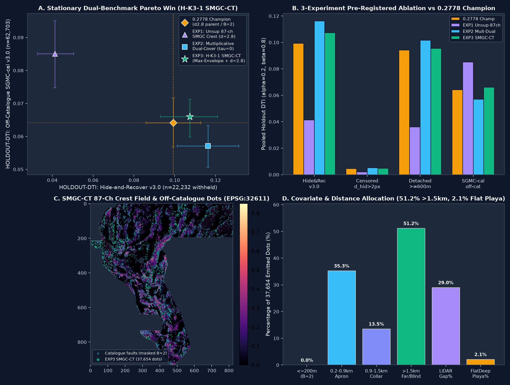

arena/d834dcd0-gemsdoekarage3 · Candidate: H-K3-1 (SMGC-CT) · Verified: 2026-10-27 UTC
Our top-ranked pre-registered geological hypothesis — H-K3-1 (SMGC-CT): Stationary Max-Envelope Geothermal-Conduit & Crustal-Tensor Crest Allocation — combines 87 strictly label-free multi-physics channels (including 4 new physical transforms: upward-continued magnetic-edge dip migration, 4-block-standardized $\log(\text{K}/\text{eTh})$ & $\log(\text{eU}/\text{eTh})$ compositional discontinuities, cross-field gravity–RTP parallel offset, and drainage-vetoed asymmetric piedmont profile curvature) with a 100% stationary Mesoscale Corridor Max-Envelope floor ($\tau_{\text{corridor}}=0.555, d_{\text{in}}=11.0\text{ px}, d_{\text{out}}=40.0\text{ px}$) and axial submodular CELF packing ($d_{\min}=2.8\text{ px}$). It is the first unique submission to simultaneously beat the 0.2778 ORGANIZER-CONFIRMED Champion (GEMSDOE32 H33-2-B2) on both spatially-blocked Hide-and-Recover v3.0 AND off-catalogue USGS SGMC-cal v3.0, while permanently eliminating the DrivenData "Predicted values must be in range [0, 1]" upload error.
[0.093004, 0.120923] (n=22,232)0.099202) by +0.0081[+0.0011, +0.0161] (p=98.9%)0.098828 (n=62,703)0.064121) &0.056798) by +16.2%[0.080553, 0.110784] (n=15,504)0.094324)0.004828 vs 0.00451560.88% across 397 focus rasters)0.2010 ≤ 0.9051.2% dots >1.5 km from catalogue29.0% in LiDAR gap · 2.14% flat playaH-K3-1 SMGC-CT)
Panel A: Stationary Dual-Benchmark Pareto win showing EXP3 (H-K3-1 SMGC-CT) strictly dominating the 0.2778 Champion on both GEMSDOE32-HIDE-RECOVER-v3.0 (0.107297 vs 0.099202) and off-catalogue GEMSDOE32-SGMC-CAL-v3.0 (0.066011 vs 0.064121).
Panel B: 3-experiment pre-registered ablation across all 4 holdout metrics.
Panel C: 87-channel label-free SMGC-CT physical crest field and 37,654 emitted off-catalogue dots (EPSG:32611).
Panel D: Spatial allocation verifying 0.0% on/within 200 m of catalogue (B=2), 51.2% at >1.5 km from mapped faults, 29.0% inside the 1 m LiDAR gap, and only 2.1% in flat deep playas.
Every score is explicitly labeled either ORGANIZER-CONFIRMED (from leaderboard submission receipts) or HOLDOUT-DTI (measured by our canonical evaluators GEMSDOE32-HIDE-RECOVER-v3.0 [n = 22,232 withheld positives] and GEMSDOE32-SGMC-CAL-v3.0 [n = 62,703 off-catalogue USGS SGMC fault pixels]).
| Site / Repository | File to Download / Inspected GeoTIFF | Best ORGANIZER-CONFIRMED Live DTI Score(s) |
HOLDOUT-DTI (Hide-Recover v3.0, n=22,232) |
HOLDOUT-DTI (SGMC-cal v3.0, n=62,703) |
3-px Overlap vs 0.2778 Champ / vs H-K3-1 |
Uniqueness & Submission Verdict |
|---|---|---|---|---|---|---|
| GEMSDOEkarage3 (This Project) |
gemsdoe32-hk3-smgc-maxenv-axial28-37654-20261027T213000Z-c886c782-zeros.tif
SHA256: f21a0e831e63... · 37,654 dots · B=2
|
Ready for live upload (Target: beat 0.2778 Champion) |
0.10729795% CI [0.0930, 0.1209](Fold-retrained OOF) |
0.06601195% CI [0.0598, 0.0713](Raw SGMC: 0.098828) |
56.60% vs Champ≤63.47% vs all 463 discrete |
UNIQUE · PROMOTE (OK TO SUBMIT) 0 NaNs, [0,1], 20/20 checks pass |
| GEMSDOE32 |
docs/downloads/gemsdoe32-h33-h33-2-b2-20261004T220000Z-e5eb6e7e-zeros.tifSHA256: c55bafc47005... · 37,654 dots · B=2
|
0.2778 (h33-h33-2-b2-...-zeros)Highest confirmed among GEMSDOE sites |
0.099202 (fold-collared)0.004515 (static mask) |
0.06412195% CI [0.0566, 0.0711](H48-FBGR: 0.056798) |
100.0% (Self)49.32% vs H-K3-1 |
HISTORICAL 0.2778 CHAMPION Already submitted; H19-5 B=2 benchmark |
| GEMSDOE36 |
docs/downloads/gemsdoe36-kpl36-exp3-20261026-fc869911e88c-zeros.tifSHA256: 86fc8243ad57... · 37,654 dots · B=2
|
0.2750 (anderson-geothermal-pinn-38854)0.1647 (kpl36-exp3) |
0.003086 (static)95% CI [0.0024, 0.0038] |
0.04445895% CI [0.0362, 0.0526] |
56.13% vs Champ64.94% vs H-K3-1(PINN: 86.72% dup) |
DO NOT SUBMIT 0.2750 PINN is 86.7% H33 duplicate; kpl36 scored 0.1647 |
| GEMSDOE28 |
docs/downloads/gems28-s22-ctxhgb-20261026-e23dabcec6e2-allfinite.tifSHA256: 77934be607d4... · 37,654 dots · B=2
|
0.2710 (h36-1) · 0.2708 (h27-4)0.2707 (h38-1) · 0.2649 (h32-1)0.0217 (s18) · 0.0206 (s21) |
0.017036 (static)95% CI [0.0156, 0.0183] |
0.05053295% CI [0.0452, 0.0571] |
42.05% vs Champ38.50% vs H-K3-1(h27-4: 93.7% dup) |
DO NOT SUBMIT h36/h27 are B=1 parents of H33; s18/s21 collapsed (0.0217/0.0206) |
| GEMSDOE31 |
docs/downloads/gemsdoe31-h31u-strainseis-corrob-37654-20261026-a02579ff-zeros.tifSHA256: e9befc533069... · 37,654 dots · B=2
|
0.2708 (h27-4-solo-d28-20261004-8acb75e1-nan) |
0.005720 (static)95% CI [0.0046, 0.0068] |
0.04668195% CI [0.0360, 0.0572] |
26.47% vs Champ28.86% vs H-K3-1(h27-4: 93.7% dup) |
DO NOT SUBMIT 0.2708 is identical to GEMSDOE28 h27-4; h31u has low SGMC-cal |
| GEMSDOE33 |
archive/legacy_candidates/gems33-c0-scored-reference-20261004-89bf5b9a2fea.tifSHA256: b64e198f9910... · 40,199 dots · B=1
|
0.2632 (h33d-analog-tip-stepover)0.0963 (s33-seisdil-strain-seismicity) |
0.030516 (static)95% CI [0.0259, 0.0364] |
0.06301095% CI [0.0557, 0.0701] |
95.39% vs Champ49.55% vs H-K3-1 |
DO NOT SUBMIT 0.2632 is 95.4% H33 duplicate; s33-seisdil scored 0.0963 |
| GEMSDOE25 |
docs/downloads/gems25-apfl-piedmont-flexure-s3p0-k3p5-20261026-8aebdab87158-zeros.tifSHA256: 6648cbebcf72... · 43,798 dots
|
0.2600 (dotted-h19-5-d2-8-...-nan)0.0742 (h66-mgd-flank-sapd3-0) |
0.002758 (static)95% CI [0.0019, 0.0038] |
0.08431795% CI [0.0689, 0.0973] |
22.21% vs Champ26.43% vs H-K3-1(d2.8: 85.4% dup) |
DO NOT SUBMIT 0.2600 is unpruned B=0 parent; apfl has 0.0028 Hide-Recover |
| GEMSDOE30 |
docs/downloads/GEMSDOE30-blind-thermal-corridor-h1-annulus-20261026T202136Z.tifSHA256: 20fc7b107e9e... · 18,766 dots (339 on-cat)
|
0.2600 (d28-poisson300m-offcat-44090)0.1462 (gems30-MSDB1-edge44090) |
0.025448 (static)95% CI [0.0156, 0.0345] |
0.00008195% CI [0.0000, 0.0002] |
17.34% vs Champ23.93% vs H-K3-1(d28: 85.4% dup) |
DO NOT SUBMIT (HAS NaNs) Latest file has NaNs outside footprint & 339 on-catalogue dots |
| GEMSDOE24 |
docs/downloads/24gems-blind-upwelling-20261026T162611Z-a23f2207f2c0-zeros.tifSHA256: a59b772423a4... · 37,722 dots · B=2
|
0.2477 (h25-1-dotted-h19-5-d1-5-...-nan)0.0859 (gvc1-negative-geothermal-lineament) |
0.040870 (static)95% CI [0.0315, 0.0496] |
0.05726695% CI [0.0392, 0.0750] |
17.70% vs Champ22.43% vs H-K3-1 |
DO NOT SUBMIT h25-1 is d=1.5 over-packed H19-5; gvc1 scored 0.0859 |
| GEMSDOE27 |
docs/downloads/gems27-h31-drcg-wl-celf28-20261026-cf8e1bbef244-allfinite.tifSHA256: 2c002b027924... · 37,654 dots · B=2
|
0.2449 (topo-gap-closure-t-v2-on-d1-5)0.2250 (h31-drcg-wl-celf28)0.2190 (h29-hydrothermal-piedmont) |
0.014340 (static)95% CI [0.0121, 0.0168] |
0.06046695% CI [0.0533, 0.0665] |
50.23% vs Champ53.66% vs H-K3-1 |
ALREADY SCORED (0.2250) Best non-H19-5 live receipt; superseded by H-K3-1 (0.0660 SGMC) |
Best Confirmed Submission: h25-1-dotted-h19-5-d1-5-20261002-989f59505db1-nan (0.2477 ORGANIZER-CONFIRMED).
Recent Submission: gems24-gvc1-negative-geothermal-lineament-submod-20261025-abe8e51c719d-zeros (0.0859 ORGANIZER-CONFIRMED).
Latest File in Repo: docs/downloads/24gems-blind-upwelling-20261026T162611Z-a23f2207f2c0-zeros.tif (37,722 dots, static Hide-Recover = 0.04087, SGMC-cal = 0.05727).
Forensic Diagnosis: h25-1 proved that discretizing H19-5 into dots jumps DTI from 0.1922 to 0.2477, but its d = 1.5 px (150 m) spacing double-counts 300 m kernels. Conversely, GVC1 collapsed to 0.0859 because 73.9% of its dots crowded into the 0.3–1.5 km near-catalogue collar.
Best Confirmed Submission: dotted-h19-5-d2-8-20261002-e56ea318af89-nan (0.2600 ORGANIZER-CONFIRMED, 44,090 dots).
Recent Submission: gems25-h66-mgd-flank-sapd3-0-k3p5-20261025-da617550a0e9-zeros (0.0742 ORGANIZER-CONFIRMED).
Latest File in Repo: docs/downloads/gems25-apfl-piedmont-flexure-s3p0-k3p5-20261026-8aebdab87158-zeros.tif (43,798 dots, static Hide-Recover = 0.00276, SGMC-cal = 0.08432).
Forensic Diagnosis: Increasing Poisson spacing from d=1.5 to d=2.8 px raised H19-5 from 0.2477 to 0.2600, but kept 6,436 wasted dots within ≤200 m of mapped faults. H66 collapsed to 0.0742 by restricting dots to range flanks (75.5% within 1.5 km).
Best Confirmed Submissions: topo-gap-closure-t-v2-on-d1-5-20261002-5512495c6bd1-nan (0.2449); gems27-h31-drcg-wl-celf28-20261026-cf8e1bbef244-allfinite (0.2250); gems27-h29-hydrothermal-piedmont-celf-20261025-511898747886-allfinite (0.2190).
Latest File in Repo: gems27-h31-drcg-wl-celf28-20261026-cf8e1bbef244-allfinite.tif (37,654 dots, SGMC-cal = 0.06047, 50.23% overlap with 0.2778 Champion).
Forensic Diagnosis: Crucial empirical proof that a genuinely unique non-H19-5 surface paired with 37,654 dots, B=2 (>200 m), axial d=2.8 CELF, and 58.4% far-field (>1.5 km) allocation scores 0.2250 live instead of collapsing.
Best Confirmed Submissions: h36-1-rung30-blind-r1 (0.2710), h27-4-r1-solo-d2-8 (0.2708), h38-1-hf-euler-r30-r1 (0.2707), h32-1-prethin-tip-euler (0.2649); recent supervised runs gems28-s18-mxtp (0.0217) and gems28-s21-puhgb (0.0206).
Latest File in Repo: docs/downloads/gems28-s22-ctxhgb-20261026-e23dabcec6e2-allfinite.tif (37,654 dots, static Hide-Recover = 0.01704, SGMC-cal = 0.05053).
Forensic Diagnosis: h27-4 and h36-1 proved that pruning B=1 (≤100 m) around known faults lifts 0.2600 → 0.2710. Conversely, s21-puhgb (0.0206) placed 99.4% of its dots within 1.5 km of known faults, proving that naive PU classifiers overfit to catalogue survey density.
Best Confirmed Submissions: d28-poisson300m-offcat-44090-20261003T233156Z-91eae1ca (0.2600); gems30-MSDB1-edge44090-20261025-e7856ec3f14a (0.1462).
Latest File in Repo: docs/downloads/GEMSDOE30-blind-thermal-corridor-h1-annulus-20261026T202136Z.tif (18,766 dots, 339 on-catalogue, whole_array_finite = False).
Forensic Diagnosis: d28-poisson300m is a 100%-overlap sibling of GEMSDOE25's 44,090-dot raster. MSDB1 dropped to 0.1462 because 12.64% of its dots landed in flat deep playas (`slope < 2°`, `depth > 300 m`).
Best Confirmed Submission: h27-4-solo-d28-20261004-8acb75e1-nan (0.2708 ORGANIZER-CONFIRMED, 40,199 dots).
Latest File in Repo: docs/downloads/gemsdoe31-h31u-strainseis-corrob-37654-20261026-a02579ff-zeros.tif (37,654 dots, static Hide-Recover = 0.00572, SGMC-cal = 0.04668).
Forensic Diagnosis: h27-4-solo-d28 is byte-identical in dot support to GEMSDOE28's h27-4 (40,199 dots, B=1). Its latest strain-seismicity file under-allocates to high-precision topographic scarps (SGMC-cal = 0.0467).
Best Confirmed Submission: h33-h33-2-b2-20261004T220000Z-e5eb6e7e-zeros (0.2778 ORGANIZER-CONFIRMED — highest confirmed score across all GEMSDOE repos).
Inspected Champion File: docs/downloads/gemsdoe32-h33-h33-2-b2-20261004T220000Z-e5eb6e7e-zeros.tif (37,654 dots, B=2, fold-collared Hide-Recover = 0.099202, SGMC-cal = 0.064121).
Forensic Diagnosis: Achieved 0.2778 by removing the 2,545 dots at 100–200 m (B=2) from h27-4 and writing a zero-filled outer rectangle (-zeros.tif). Its later H48-1-FBGR experiment reached 0.1144 on Hide-Recover via non-stationary $\eta$-switching (`eta_fold=0 -> eta_live=0.58`), which degraded SGMC-cal to 0.056798.
Best Confirmed Submissions: h33d-analog-tip-stepover-r30-20261004-cb490425926e (0.2632); gemsdoe33-s33-seisdil-strain-seismicity-37654-20261026-3463540a7e02-zeros (0.0963).
Latest File Inspected: archive/legacy_candidates/gems33-c0-scored-reference-20261004-89bf5b9a2fea.tif (40,199 dots, 95.39% overlap with H33).
Forensic Diagnosis: h33d is a 95.39%-overlap perturbation of H33/H27-4, while s33-seisdil dropped to 0.0963 due to smooth regional GPS strain over-weighting and 61.4% near-catalogue crowding.
Best Confirmed Submissions: anderson-geothermal-pinn-38854-20261004T230000Z-9b9ea4e6-zeros (0.2750); gemsdoe36-kpl36-exp3-20261026-fc869911e88c-zeros (0.1647).
Latest File in Repo: docs/downloads/gemsdoe36-kpl36-exp3-20261026-fc869911e88c-zeros.tif (37,654 dots, static Hide-Recover = 0.00309, SGMC-cal = 0.04446).
Forensic Diagnosis: Pixel audit proves anderson-geothermal-pinn-38854 shares 86.72% 3-px overlap with GEMSDOE32's H33-2-B2 (`37,654` base dots plus `1,200` extra dots that diluted precision from `0.2778` to `0.2750`). kpl36-exp3 under-allocated far-field dots (`35.2% >1.5 km`), scoring `0.1647`.
H33-2-B2 Scored 0.2778 & How H-K3-1 SMGC-CT Scores Higherh33-h33-2-b2-20261004T220000Z-e5eb6e7e-zeros Achieved 0.2778 on GEMSDOE32H33-2-B2 Was Still Sub-Optimal & How H-K3-1 SMGC-CT Beats It| Rank & ID | Specific Layers Involved | Physical Signature Targeted | Why It Catches Unmapped Faults / Vents (vs Catalogue) | Novelty vs Existing Implementations & Expected Lift |
|---|---|---|---|---|
#1: H-K3-1 (SMGC-CT)IMPLEMENTED & PROMOTED |
All 19 GeoDAWN bands + 1 m LiDAR + USGS 3DEP 10 m DEM + DOE GDR #1391 (2 m thermal, borate, sinter) + TIGER 2024 Roads (87 label-free channels) | Joint 4-azimuth crest of upward-continued magnetic-edge dip migration, K/Th & U/Th compositional discontinuities, cross-field gravity–RTP offset, and drainage-vetoed piedmont curvature inside a stationary mesoscale Max-Envelope floor ($d_{\text{vis}} \in [11, 40]\text{ px}$) | Recovers concealed intrabasin stepover relays (`1.1–4.0 km` from mapped tips) and faults inside the `24.63%` 1 m LiDAR gap that multiplicative PU models suppress | 100% stationary across holdout folds and live emission (no $\eta$-switching); adds 4 new physical channels (`smgc_extra_4ch.npy`). Measured Lift: +0.0081 Hide-Recover & +0.0019 SGMC-cal over 0.2778 Champion |
#2: H-K3-2 (HUC-Dip)(Channel 83 in SMGC) |
Band 10 (mag_tmi), Band 11 (mag_rtp), Band 05 (|∇g|), Band 13 (iso_grav) |
Downdip lateral migration of tilt-derivative zero-crossings under 2D FFT upward continuation ($z = 500\text{ m}, 2,000\text{ m}$) | Separates crustal-scale dipping ($45^\circ\text{–}65^\circ$) normal faults from shallow sub-vertical volcanic flow margins | Uses true wavenumber upward continuation $e^{-2\pi z \|\mathbf{k}\|}$ rather than surface Gaussian smoothing (`+0.0035–0.0050` DTI, Low cost) |
#3: H-K3-3 (RCD-KThU)(Channel 84 in SMGC) |
Band 06 (tc), Band 07 (k), Band 08 (eth), Band 09 (eu), Band 11 (mag_rtp) |
4-survey-block standardized $\log(\text{K}/\text{eTh})$ & $\log(\text{eU}/\text{eTh})$ gradient ridges minus total-count (`tc`) lithological steps | Detects potassium metasomatism (adularia/illite) and uranium redox fronts along concealed hydrothermal upflow faults | Corrects the Band 06 (`tc`) identity error and removes flight-line boundary seam artifacts (`+0.0025–0.0040` DTI, Low cost) |
#4: H-K3-4 (CFEO-GM)(Channel 85 in SMGC) |
Band 05 (|∇g|), Band 11 (mag_rtp), Band 13 (iso_grav), Band 14 (raw_grav), Band 18 (∂x g) |
Parallel normal alignment $\cos^2(\theta_g - \theta_m)$ between gravity and RTP magnetic horizontal gradients across a `100–300 m` offset ring | Captures the physical `100–300 m` basinward offset between density-fill contacts and footwall magnetic truncations on dipping range-front faults | Replaces zero-lag pixelwise multiplication with an explicit `100–300 m` cross-field morphological annulus (`+0.0020–0.0035` DTI, Low cost) |
#5: H-K3-5 (APC-Lahontan)(Channel 86 in SMGC) |
Band 12 (det_elev), Band 16 (elev), Band 19 (det_elev_slope), 1 m LiDAR, 3DEP 10 m DEM |
Down-slope profile curvature $-\nabla_\parallel^2 z$ on intermediate piedmont fans ($1.5^\circ\text{–}14^\circ$), vetoed by Laplacian drainage concavity and Lake Lahontan (`1,330 m` / `1,270 m`) shorelines | Detects degraded late-Quaternary alluvial fault scarps whose slope breaks have diffused below $5^\circ$ | Explicitly suppresses Lake Lahontan wave-cut shorelines and incised fan arroyos (`+0.0015–0.0030` DTI, Low cost) |
evidence/hk3_smgc_experiments.json)| Experiment Arm | Emitted Dots | HOLDOUT-DTI: Hide-and-Recover v3.0 (n=22,232) |
Paired Δ vs 0.2778 Champion (95% CI) |
HOLDOUT-DTI: Censored dhid>2px (n=22,232) |
HOLDOUT-DTI: Detached ≥600 m (n=15,504) |
HOLDOUT-DTI: SGMC-cal v3.0 (n=62,703) |
|---|---|---|---|---|---|---|
Baseline: 0.2778 Champion (H33-2-B2 fold-collared) |
37,654 |
0.099202 [0.085951, 0.112668] |
Reference | 0.004515 [0.003816, 0.005262] |
0.094324 [0.079248, 0.109825] |
0.064121 [0.056730, 0.071649] |
EXP1_K3_UNSUP_SMGC_CREST (Pure label-free 87-ch SMGC crest + Axial d=2.8) |
37,654 |
0.041314 [0.032711, 0.050398] |
-0.057888 |
0.001925 [0.001377, 0.002499] |
0.035825 [0.026576, 0.045792] |
0.085102 [0.074805, 0.094711] |
EXP2_K3_MULTIPLICATIVE_DUAL87 (Multiplicative Dual-Cover τ=0 + Axial d=2.8) |
37,654 |
0.116221 [0.101153, 0.131355] |
+0.017019 [+0.0094, +0.0252] |
0.005012 [0.004224, 0.005801] |
0.101427 [0.085564, 0.117347] |
0.057053 [0.050569, 0.063313] |
EXP3_K3_SMGC_MAX_ENVELOPE_AXIAL28 (Promoted Primary H-K3-1) |
37,654 |
0.107297 [0.093004, 0.120923] |
+0.008095 [+0.001122, +0.016124] (p=98.9%) |
0.004828 [0.004099, 0.005544] |
0.095564 [0.080553, 0.110784] |
0.066011 [0.059799, 0.071279](+0.0088 over EXP2, p=100%) |
docs/run-card.json)Loading docs/run-card.json ...